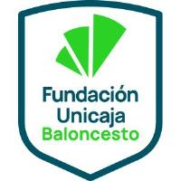
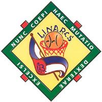
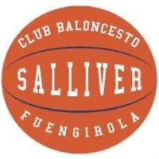
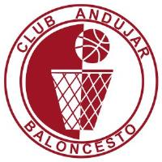

Partidos de CB El Palo
sábado 12 sep0 partidos
Pabellón La MoscaMálaga
jueves 17 sep1 partido
- jue 17 sep N1 Masculino CB El Palo – Málaga Basket Pabellón La MoscaPista 1 VI Supercopa Diputación Provincial Málaga · Jornada 2
Pabellón La MoscaMálaga
domingo 20 sep2 partidos
-
dom 20 sep
N1 Femenino

Unicaja – CB El Palo Pabellón José Mª Martín UrbanoPista centroMálaga VI Supercopa Diputación Provincial Málaga · Jornada 2 - dom 20 sep N1 Masculino EBG Málaga Tecnocasa – CB El Palo Pabellón José Mª Martín UrbanoPista centroMálaga VI Supercopa Diputación Provincial Málaga · Jornada 3
Pabellón José Mª Martín UrbanoMálaga
sábado 26 sep0 partidos
Forus Antonio PrietoGranada
sábado 3 oct0 partidos
Pabellón La MoscaMálaga
sábado 10 oct0 partidos
Parque Deportes San JoséLinares
domingo 11 oct0 partidos
Colegio AgustinosGranada
sábado 17 oct0 partidos
Pabellón La MoscaMálaga
domingo 25 oct0 partidos
Colegio El PinarAlhaurín de la Torre
Pabellón José Mª Martín UrbanoMálaga
sábado 31 oct0 partidos
Pabellón La MoscaMálaga
sábado 7 nov0 partidos
Pabellón La MoscaMálaga
Pabellón VeletaGranada
sábado 14 nov0 partidos
Pabellón La MoscaMálaga
Polideportivo Ramón Rico Benalmádena PuebloBenalmádena
sábado 21 nov0 partidos
Pabellón La MoscaMálaga
domingo 22 nov0 partidos
Pabellón Paquillo FernándezGranada
sábado 28 nov0 partidos
Pabellón La MoscaMálaga
Complejo Polideportivo Alcalá La RealAlcalá la Real
sábado 5 dic0 partidos
Pabellón La MoscaMálaga
sábado 12 dic0 partidos
Pabellón La MoscaMálaga
Pabellón del ToyoEl Toyo
sábado 19 dic0 partidos
Pabellón La MoscaMálaga
Ciudad Deportiva Javier Imbroda (Carranque)Málaga
sábado 9 ene0 partidos
Pabellón La MoscaMálaga
sábado 16 ene0 partidos
Pabellón Carlos Martínez EstebanJaén
Pabellón Municipal La MojoneraLa Mojonera
sábado 23 ene0 partidos
Pabellón La MoscaMálaga
sábado 30 ene0 partidos
Pabellón JuanitoFuengirola
sábado 6 feb0 partidos
Pabellón La MoscaMálaga
sábado 13 feb0 partidos
Pabellón Carlos Martínez EstebanJaén
domingo 14 feb0 partidos
Pabellón José Mª Martín UrbanoMálaga
sábado 20 feb0 partidos
Pabellón La MoscaMálaga
sábado 6 mar0 partidos
Polideportivo MunicipalAndújar
domingo 7 mar0 partidos
Pabellón Guillermo García Pezzi-MelillaMelilla
sábado 13 mar0 partidos
Pabellón La MoscaMálaga
sábado 20 mar0 partidos
Pabellón Blas InfanteAlhaurín de la Torre
domingo 21 mar0 partidos
Pabellón José Antonio PinedaEstepona
sábado 3 abr0 partidos
Pabellón La MoscaMálaga
domingo 4 abr0 partidos
Pabellón José Mª Martín UrbanoMálaga
sábado 10 abr0 partidos
Pabellón La MoscaMálaga
domingo 11 abr0 partidos
Pabellón José Mª Martín UrbanoMálaga
domingo 18 abr0 partidos
Pabellón Infanta CristinaRoquetas de Mar
Pabellón La MoscaMálaga
Ciudad Deportiva Javier Imbroda (Carranque)Málaga
Colegio AgustinosGranada
Colegio El PinarAlhaurín de la Torre
Complejo Polideportivo Alcalá La RealAlcalá la Real
Forus Antonio PrietoGranada
Pabellón Blas InfanteAlhaurín de la Torre
Pabellón Carlos Martínez EstebanJaén
Pabellón del ToyoEl Toyo
Pabellón Guillermo García Pezzi-MelillaMelilla
Pabellón Infanta CristinaRoquetas de Mar
Pabellón José Antonio PinedaEstepona
Pabellón José Mª Martín UrbanoMálaga
Pabellón JuanitoFuengirola
Pabellón Municipal La MojoneraLa Mojonera
Pabellón Paquillo FernándezGranada
Pabellón VeletaGranada
Parque Deportes San JoséLinares
Polideportivo MunicipalAndújar
Polideportivo Ramón Rico Benalmádena PuebloBenalmádena
No hay partidos del club en estas fechas.
- sáb 12 sep N1 Femenino CB El Palo 57 – 53 Unicaja Pabellón La MoscaPista 1 VI Supercopa Diputación Provincial Málaga · Jornada 1
- sáb 12 sep N1 Masculino CB El Palo 90 – 78 CB Benalmádena Pabellón La MoscaPista 1 VI Supercopa Diputación Provincial Málaga · Jornada 1
- sáb 26 sep N1 Femenino El Plantel GMASB – CB El Palo Forus Antonio PrietoPista sin indicarGranada Liga N1 · Jornada 1
- sáb 3 oct N1 Masculino CB El Palo – Caja Rural Jaén C.B. Pabellón La MoscaPista central Liga N1 · Jornada 1
- sáb 3 oct N1 Femenino CB El Palo – CB La Mojonera Pabellón La MoscaPista central Liga N1 · Jornada 2
-
sáb 10 oct
N1 Masculino

Linaqua CB Linares – CB El Palo Parque Deportes San JoséPista sin indicarLinares Liga N1 · Jornada 2 - dom 11 oct N1 Femenino Hispania Agustinos – CB El Palo Colegio AgustinosPista sin indicarGranada Liga N1 · Jornada 3
-
sáb 17 oct
N1 Masculino
CB El Palo – CB Salliver Fuengirola

Pabellón La MoscaPista central Liga N1 · Jornada 3 - sáb 17 oct N1 Femenino CB El Palo – CB Salliver Fuengirola Pabellón La MoscaPista central Liga N1 · Jornada 4
- dom 25 oct N1 Femenino EBG Málaga – CB El Palo Pabellón José Mª Martín UrbanoPista AMálaga Liga N1 · Jornada 5
- dom 25 oct N1 Masculino CD Colegio El Pinar – CB El Palo Colegio El PinarPista centralAlhaurín de la Torre Liga N1 · Jornada 4
- sáb 31 oct N1 Femenino CB El Palo – Caja Rural Jaén Pabellón La MoscaPista central Liga N1 · Jornada 6
- sáb 7 nov N1 Femenino Fundación CB Granada – CB El Palo Pabellón VeletaPista sin indicarGranada Liga N1 · Jornada 7
- sáb 7 nov N1 Masculino CB El Palo – EBG Málaga Tecnocasa Pabellón La MoscaPista central Liga N1 · Jornada 5
- sáb 14 nov N1 Femenino CB El Palo – Melilla La Salle Pabellón La MoscaPista central Liga N1 · Jornada 8
- sáb 14 nov N1 Masculino CB Benalmádena – CB El Palo Polideportivo Ramón Rico Benalmádena PuebloPista centralBenalmádena Liga N1 · Jornada 6
-
sáb 21 nov
N1 Masculino
CB El Palo – Club Andújar

Pabellón La MoscaPista central Liga N1 · Jornada 7 - dom 22 nov N1 Femenino Presentación Granada – CB El Palo Pabellón Paquillo FernándezPista sin indicarGranada Liga N1 · Jornada 9
- sáb 28 nov N1 Femenino CB El Palo – CAB Estepona Pabellón La MoscaPista central Liga N1 · Jornada 10
- sáb 28 nov N1 Masculino CB La Mota – CB El Palo Complejo Polideportivo Alcalá La RealPista sin indicarAlcalá la Real Liga N1 · Jornada 8
- sáb 5 dic N1 Femenino CB El Palo – Unicaja SD Pabellón La MoscaPista central Liga N1 · Jornada 11
- sáb 12 dic N1 Masculino CB El Palo – Alhaurín de La Torre Pabellón La MoscaPista central Liga N1 · Jornada 9
- sáb 12 dic N1 Femenino El Toyo – CB El Palo Pabellón del ToyoPista sin indicarEl Toyo Liga N1 · Jornada 12
- sáb 19 dic N1 Masculino Málaga Basket – CB El Palo Ciudad Deportiva Javier Imbroda (Carranque)Pista sin indicarMálaga Liga N1 · Jornada 10
- sáb 19 dic N1 Femenino CB El Palo – CD Roquetas BC Pabellón La MoscaPista central Liga N1 · Jornada 13
- sáb 9 ene N1 Masculino CB El Palo – Unicaja SD Pabellón La MoscaPista central Liga N1 · Jornada 11
- sáb 9 ene N1 Femenino CB El Palo – El Plantel GMASB Pabellón La MoscaPista central Liga N1 · Jornada 14
- sáb 16 ene N1 Femenino CB La Mojonera – CB El Palo Pabellón Municipal La MojoneraPista sin indicarLa Mojonera Liga N1 · Jornada 15
- sáb 16 ene N1 Masculino Caja Rural Jaén C.B. – CB El Palo Pabellón Carlos Martínez EstebanPista sin indicarJaén Liga N1 · Jornada 12
- sáb 23 ene N1 Masculino CB El Palo – Linaqua CB Linares Pabellón La MoscaPista central Liga N1 · Jornada 13
- sáb 23 ene N1 Femenino CB El Palo – Hispania Agustinos Pabellón La MoscaPista central Liga N1 · Jornada 16
- sáb 30 ene N1 Masculino CB Salliver Fuengirola – CB El Palo Pabellón JuanitoPista centralFuengirola Liga N1 · Jornada 14
- sáb 30 ene N1 Femenino CB Salliver Fuengirola – CB El Palo Pabellón JuanitoPista centralFuengirola Liga N1 · Jornada 17
- sáb 6 feb N1 Masculino CB El Palo – CD Colegio El Pinar Pabellón La MoscaPista central Liga N1 · Jornada 15
- sáb 6 feb N1 Femenino CB El Palo – EBG Málaga Pabellón La MoscaPista central Liga N1 · Jornada 18
- sáb 13 feb N1 Femenino Caja Rural Jaén – CB El Palo Pabellón Carlos Martínez EstebanPista sin indicarJaén Liga N1 · Jornada 19
- dom 14 feb N1 Masculino EBG Málaga Tecnocasa – CB El Palo Pabellón José Mª Martín UrbanoPista AMálaga Liga N1 · Jornada 16
- sáb 20 feb N1 Masculino CB El Palo – CB Benalmádena Pabellón La MoscaPista central Liga N1 · Jornada 17
- sáb 20 feb N1 Femenino CB El Palo – Fundación CB Granada Pabellón La MoscaPista central Liga N1 · Jornada 20
- sáb 6 mar N1 Masculino Club Andújar – CB El Palo Polideportivo MunicipalPista sin indicarAndújar Liga N1 · Jornada 18
- dom 7 mar N1 Femenino Melilla La Salle – CB El Palo Pabellón Guillermo García Pezzi-MelillaPista sin indicarMelilla Liga N1 · Jornada 21
- sáb 13 mar N1 Masculino CB El Palo – CB La Mota Pabellón La MoscaPista central Liga N1 · Jornada 19
- sáb 13 mar N1 Femenino CB El Palo – Presentación Granada Pabellón La MoscaPista central Liga N1 · Jornada 22
- sáb 20 mar N1 Masculino Alhaurín de La Torre – CB El Palo Pabellón Blas InfantePista centralAlhaurín de la Torre Liga N1 · Jornada 20
- dom 21 mar N1 Femenino CAB Estepona – CB El Palo Pabellón José Antonio PinedaPista centralEstepona Liga N1 · Jornada 23
- sáb 3 abr N1 Masculino CB El Palo – Málaga Basket Pabellón La MoscaPista central Liga N1 · Jornada 21
- dom 4 abr N1 Femenino Unicaja SD – CB El Palo Pabellón José Mª Martín UrbanoPista AMálaga Liga N1 · Jornada 24
- sáb 10 abr N1 Femenino CB El Palo – El Toyo Pabellón La MoscaPista central Liga N1 · Jornada 25
- dom 11 abr N1 Masculino Unicaja SD – CB El Palo Pabellón José Mª Martín UrbanoPista AMálaga Liga N1 · Jornada 22
- dom 18 abr N1 Femenino CD Roquetas BC – CB El Palo Pabellón Infanta CristinaPista sin indicarRoquetas de Mar Liga N1 · Jornada 26